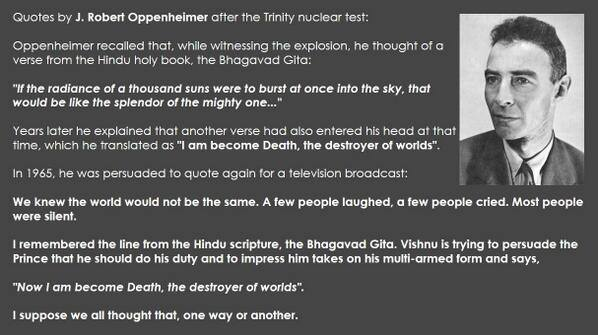

Dilip Singh
Oppenheimer(the father of Atom Bomb) and The Vedas
Credits/ Reference: Ancient Indian UFO, Krishna Key by Ashwin Sanghi
J. Robert Oppenheimer,
American nuclear physicist (1904-1967):
"If the radiance of a thousand suns were to burst into the sky, that would be like the splendor of the Mighty One. . . . Now I am become death, the destroyer of worlds.“
Except Indians in #India all great scientists and great minds are followers and devotees of #Hindu Scripts .
Oppenheimer "the father of the atomic bomb" quoting from the Hindu scripture Bhagavad-Gita upon witnessing the mushroom cloud resulting from the detonation of the world’s first atomic bomb in New Mexico, U.S.A., on July 16, 1945.
“Access to the Vedas is the greatest privilege this century may claim over all previous centuries. “
Full details #AIUFO : The first atomic explosion as recorded in the world history took place at a remote place near New Mexico in July 16, 1945. This first atomic explosion was done to test the destructive power of an atomic explosion and unleash the theoretical assumptions. And now as usual I’m here to say that prehistoric nuclear explosions were present in ancient India. Though it was not proved, it is believed that atomic explosions might have taken place in India in pre historic period.
Dr. Julius Robert Oppenheimer - Father of atom bomb The first atomic bomb was detonated by Dr. Julius Robert Oppenheimer on July 16, 1945 in the Trinity test in New Mexico as mentioned earlier. Dr.J.R.Oppenheimer is called the father of the atomic bomb. During the explosion of the first atomic bomb, Oppenheimer quoted several Bhagavad Gita verses from the 11th chapter, such as:
“Death I am, cause of destruction of the worlds…”
Oppenheimer about Bhagavad Gita He also quotes the Indian Vedas as
“The Vedas are the greatest privilege of this century.”
Few days later during a college lecture, a student asked “Was the atomic test at Alamagordo the first nuclear blast?” (The student meant was there any U.S program before Alamagordo?) Oppenheimer answered: “Yes, In modern times.” (Oppenheimer meant that it was the first one, not counting the ancient nuclear wars of the past) So, how does Oppenheimer believe about the ancient atomic explosions in India
In his first year as an graduate at Havard, Oppenheimer was admitted to graduate standing in physics on the basis of independent study. As an undergraduate he never took a class in phyics. In 1933 he learned Sanskrit and met the Indologist Arthur Ryder at Berkely. He read the Gita in Sanskrit. He later developed a keen interest towards the ancient texts of India. Later he cited a visit to India as the most influential thing in his life. Ancient Indian Vimana
For every theory he gives a quote from Mahabharata or Gita. Once he stated about the ancient Indian texts that “They are not fictional stories. They are history. They speak of flying vimanas. ‘Vimanas’ were real vehicles and the origin of the ‘Aeroplanes’.
Great wars were described in the early texts. Weapons could literally level the land like a moving force field.” About ancient atomic explosions Oppenheimer stated that
“In ancient India, we find words for certain measurements of length, one was the distance of light-years and one was the length of the atom. Only a society that possessed nuclear energy would have the need for such words.”
Evidences for ancient atomic warfare around the globe in New York Tribune Newspaper.
Historian Kisai Mohan Ganguli says that Indian sacred writings are full of such descriptions which sound like an atomic blast as experienced in Hiroshima and Nagasaki. He says references mention fighting sky chariots and final weapons. An ancient battle is described in the Drona Parva, a section of Mahabharata. “The passage tells of combat where explosions of final weapons decimate entire armies, causing crowds of warriors with steeds and elephants and weapons to be carried away as if they were dry leaves of trees,” says Ganguli. Consider these verses from the ancient epic Mahabharata, “A single projectile charged with all the power of the universe. An incandescent column of smoke and flame as bright as the thousand suns rose in its entire splendor. A perpendicular explosion with its billowing smoke clouds. The cloud of smoke rising after its explosion formed into expanding round circles like the opening of giant parasols. It was unknown weapon, an ironic thunderbolt, A gigantic messenger of death, which reduced to ashes. The Devasting Power of a Nuclear Bomb
entire race of the Virshins and the Andhakas were destroyed. The corpses were so burned as to be unrecognizable. The hair and nails fell out, pottery broke without apparent cause,And the birds turned white. After a few hours all foodstuffs were infected. To escape from this fire the soldiers threw themselves in streams to wash themselves and their equipment.” Until the bombing of Hiroshima and Nagasaki, modern mankind could not imagine any weapon as horrible and devasting as tose described in ancient Indian texts. Yet they very accurately described the effects of atomic explosion which is not possible unless they have experienced a similar one those days. Radioactive poisoning will make hair and nails fall out. Immersing oneself in water gives some respite, though it is not a cure. Excavations at Harappa
Other evidences were obtained during the excavations at Harappa and Mohenjo-Daro. These excavations discovered skeletons scattered about the cities, many holding hands and sprawling in streets as if some instant, horrible doom had taken place. People were just lying, unburied, in the streets of the city. Excavations down to the street level revealed 44 scattered skeletons, as if doom had come so suddenly they could not get to their houses. All the skeletons were flattened to the ground. A father, mother and child were found flattered in the street, face down and still holding hands. And these skeletons are thousands of years old, even by traditional archeological standards. What could cause such a thing? Why did the bodies get decay or eaten by wild animals? Furthermore, there is no apparent cause of physically violent death. These skeletons are among the most radioactive ever found on par with those at Hiroshima and Nagasaki.
